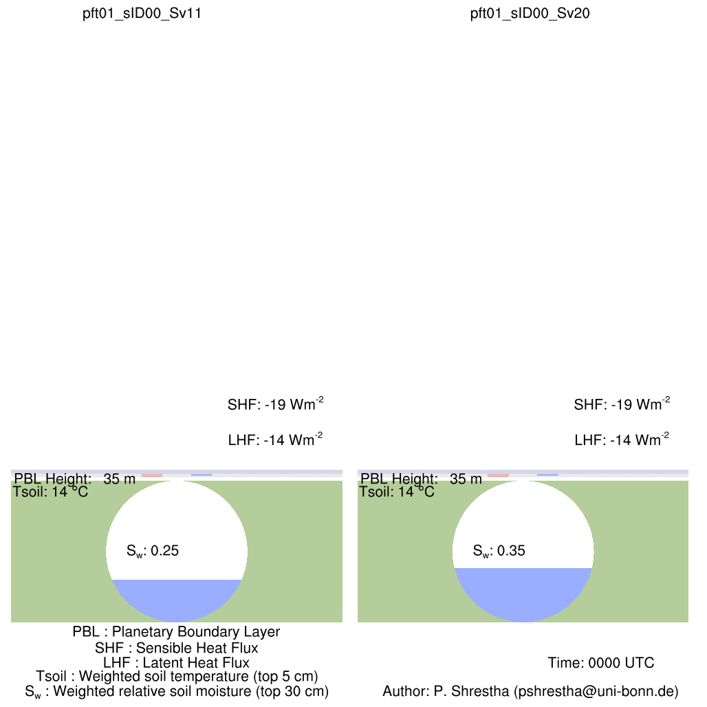

Diurnal Cycle of Soil Moisture, Surface Fluxes and Boundary Layer

How changes in earth's surface affects the environment we live in?
Eg. below shows the diurnal evolution of PBL depth, amplitudes of surface fluxes, weighted soil temperature and soil moistu
re. The two simulations are identical except for the root-zone soil moisture initialization, with Sw=0.24, the stomata in t
he leaves of needleaf trees are partially closed, while for Sw=0.33, the stomata are fully open.
Visulization using examples from TerrSysMP tutorial